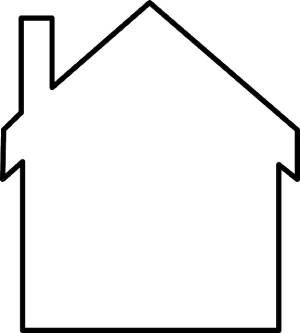

O Ponto
O ponto talvez seja a forma mais básica da representação visual, sendo usado por diversos artistas, não apenas no desenho, como também na fotografia, moda, arquitetura, publicidade, etc.
É a partir do ponto que surgem todas as outras formas. O ponto pode ser representado por mancha, circulo, ou esferas. Também é bem variado o seu uso, já que ele pode ser posto com um único elemento na imagem como também pode ser agrupado, gerando assim diversas sensações.
[FOTOS]A Linha
A linha é um dos primeiros elementos fundamentais do desenho que artistas usam para representar o mundo que eles observam ou as ideias abstratas que vem em suas mentes
Basicamente a linha pode ser descrita como uma sequência de pontos, e como ela é um elemento da comunicação visual também tem funcionalidades dentro da Arte como, por exemplo:
- Direcionar nosso olhar
- Gerar sensações psicológicas
- Da forma aos objetos
Exemplo:
Linhas verticais transmitem sensações de firmeza, imponência, força, espiritualidade, enquanto linhas horizontais traz sensações de calma, repouso e contemplação. Já linhas na diagonal dão dinamismo a imagem, causando uma sensação de movimento, inquietação e ação.
Outra característica importante das linhas é a espessura, pois, traz sensações de leveza, peso e equilíbrio.
Enquanto que linhas retas passam firmeza, masculinidade. As curvas passam sensação de leveza e feminilidade, mistas passam sensação de harmonia.
Forma
Quando uma linha se fecha sob si mesma, da origem a uma forma, e são elas as nossas primeiras percepções do que está na arte, pois, só olhando para elas, já identificamos a ideia ou o objeto que ela está representando. Caso a forma seja algo indefinido podemos chama-la de formas abstratas.
Mas uma das aplicações mais comum são as das formas geométricas. Na hora de desenhar podemos reduzir objetos complexos em figuras geométricas simples, facilitando a construção do desenho.
Cor
A cor é praticamente o toque final, e são elas que nos geram boa parte das emoções de uma obra, pois, elas podem influenciar até o nosso humor, por exemplo, imagens com cores quentes são muitas vezes interpretadas como algo alegre e com intensidade, enquanto as que possuem cores frias são mais reflexivas e passam um ar de melancolia.